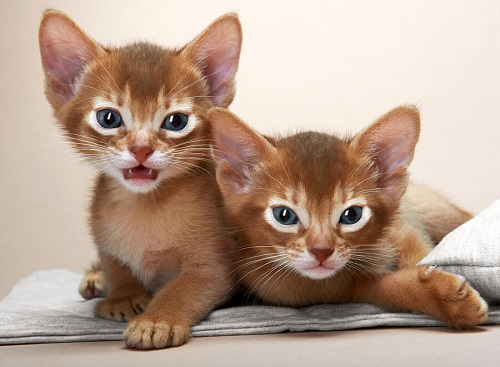
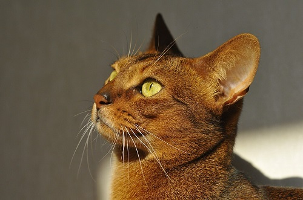

Mèo Abyssinian có bề ngoài khiến người ta gợi nhớ về những loài mèo Ai Cập cổ xưa như trên các phù điêu mà cổ dân Ai Cập đã từng vẽ
Dáng vẻ của giống mèo Abyssinian thuộc vào kiểu khá mảnh mai, dẻo dai và thon gọn. Ưu điểm nằm ở chiều cao tiêu chuẩn có thể đạt tới 60cm khiến cho chúng trông có vẻ cao to, tuy vậy thực chất cân nặng trung bình cũng chỉ từ 5- 8kg. Thoạt nhìn qua, rõ ràng mèo Abyssinian trông như gầy guộc nhưng thực ra đấy đúng chuẩn là ngoại hình phổ biến của giống mèo này.
Các điểm cộng tiêu chuẩn về ngoại hình của Abyssinian đã khiến rất nhiều nhà lai tạo ưng ý, họ cho phối giống và tạo thành những giống mèo lai khác kế thừa ưu điểm của Abyssinian, những phiên bản này nhìn chung là thành công. Giống mèo lai Burmese Miến Điện ngày nay với màu lông socola, lông ngắn chính là đại diện trong các giống lai từ Abyssinian, chúng cũng dinh dự đoạt giải cao nhất ở Tổ chức Mèo Quốc tế (TICA) của vương quốc Anh.